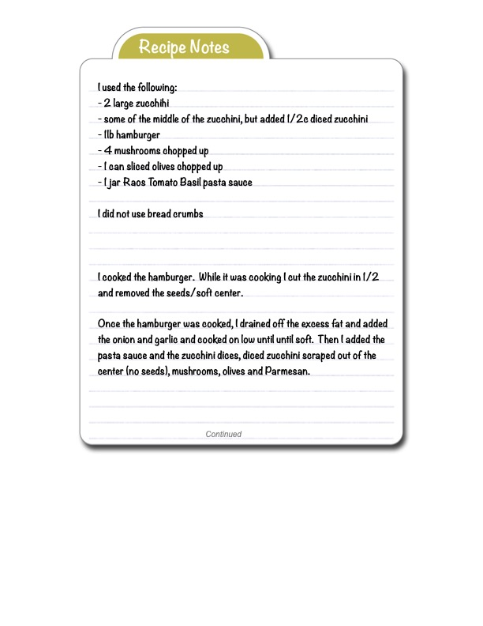

I used the following:

Original cookbook page 213
Ingredients
- 2 large zucchini
- Some of the middle of the zucchini, but added 1/2 a diced zucchini
- 1 lb hamburger
- 4 mushrooms chopped up
- 1 can sliced olives chopped up
- 1 jar Rao's Tomato Basil pasta sauce
Instructions
- - some of the middle of the zucchini, but added 1/2c diced zucchini - 1lb hamburger
- - 1 can sliced olives chopped up
- ( cooked the hamburger.
- While it was cooking I cut the zucchini in 1/2 and removed the seeds/ soft center.
- Once the hamburger was cooked, I drained off the excess fat and added the onion and garlic and cooked on low until until soft.
- Then I added the pasta sauce and the zucchini dices, diced zucchini scraped out of the center (no seeds), mushrooms, olives and Parmesan.
Recipe #213 from collection